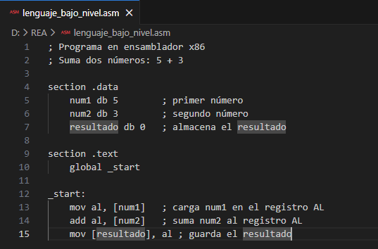
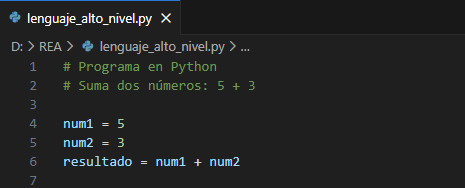
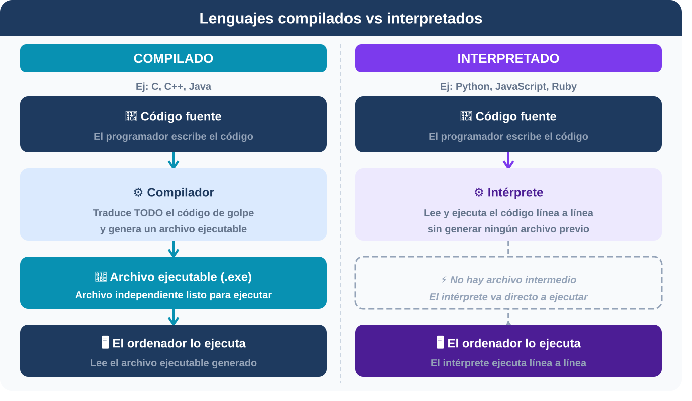
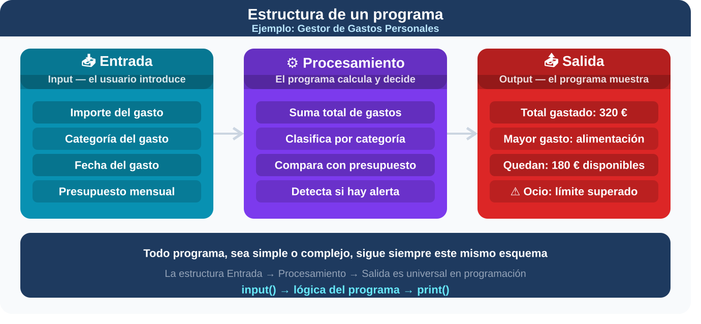

1. De la idea al código real
Como viste en la primera situación de aprendizaje, ya sabes cómo organizar una mudanza o hacer un café paso a paso. Aprendiste a usar el "divide y vencerás" y a plasmar esas soluciones en diagramas de flujo y pseudocódigo. Pero, como bien sabes, un ordenador no entiende nuestro pseudocódigo; necesita que le hablemos en su propio idioma. Aquí es donde entran los lenguajes de programación.
Un lenguaje de programación no es más que un conjunto de reglas, símbolos y palabras (casi siempre en inglés) que nos permite darle instrucciones exactas a la máquina.
Tipos de lenguajes de programación
No todos los lenguajes son iguales. Se clasifican principalmente según dos criterios:
1. Según su cercanía a la máquina (Nivel):
- Bajo nivel: hablan casi directamente el "idioma" electrónico del ordenador (ceros y unos). Son dificilísimos de leer para un humano, pero rapidísimos para la máquina.

- Alto nivel: están diseñados para que tú los entiendas fácilmente. Usan palabras como print (imprimir) o if (si condicional). La máquina necesita "traducirlos" antes de ejecutarlos. (Nosotros usaremos estos).

2. Según como se traducen (Ejecución):
- Compilados: un programa (compilador) coge todo tu código, lo traduce de golpe al idioma de la máquina y crea un archivo ejecutable (como los .exe de Windows).
- Interpretados: un programa (intérprete) lee tu código y lo va traduciendo y ejecutando línea a línea, sobre la marcha. Es como tener un traductor simultáneo a tu lado.


Nota aclaratoria: el caso de Java
Aunque en el esquema anterior Java aparece clasificado como lenguaje compilado, conviene matizar este punto. Java sigue en realidad un modelo híbrido:
- El compilador (javac) traduce el código fuente a un código intermedio llamado bytecode, no a lenguaje máquina nativo del procesador.
- Ese bytecode es después ejecutado por la Máquina Virtual de Java (JVM), que lo interpreta y, para mejorar el rendimiento, compila en tiempo de ejecución (JIT, Just-In-Time) las partes del código que se ejecutan con más frecuencia.
Por tanto, Java combina ambos enfoques: hay una fase de compilación (a bytecode) y una fase de interpretación/compilación en tiempo real (por la JVM). Este mismo patrón lo siguen otros lenguajes como C# (con el CLR de .NET) o Kotlin.
La estructura de un programa
Independientemente del lenguaje que uses, cuando pases tu algoritmo a código, la inmensa mayoría de los programas siguen una estructura básica de tres fases:
- Entrada de datos (Input): el programa recibe la información que necesita. Por ejemplo, le pedimos al usuario que introduzca el importe de una factura.
- Procesamiento: el programa aplica la lógica (operaciones, condicionales, bucles) sobre esos datos. Por ejemplo, sumar la factura al total mensual.
- Salida de información (Output): el programa muestra el resultado. Por ejemplo, mostrar en pantalla: "Llevas gastados 150€ este mes".
Haz clic sobre la imagen para ampliarla

Imagen de elaboración propia generada con Claude. Estructura de un programa (CC BY-NC-SA)

2. Comprueba lo aprendido
Responde a las preguntas del cuestionario